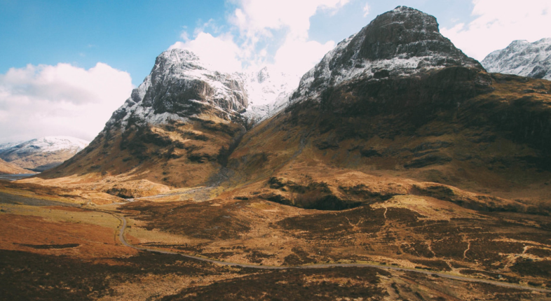

CHOOSE TYPEFACE
SANS SERIF
Arctic sea ice extent hits record low for winter maximum
CNN
Apr 3, 2015
ENVIRONMENT
According to the National Oceanic and Atmospheric Administration, Ted Scambos, NSIDC lead scientist, puts the potentially record low maximum sea ice extent this year down to low ice extent in the Pacific and a late drop in ice extent in the Barents Sea.

“Over the span of the satellite record, Arctic sea ice has been declining significantly, while sea ice in the Antarctic has increased very slightly”